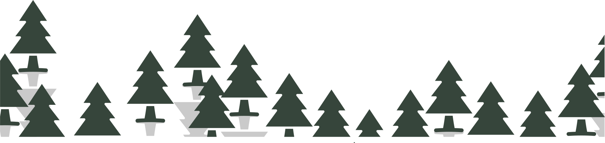
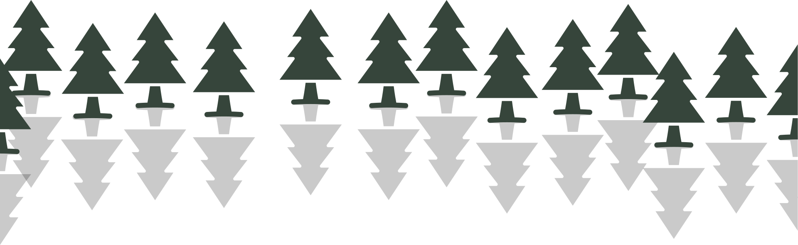
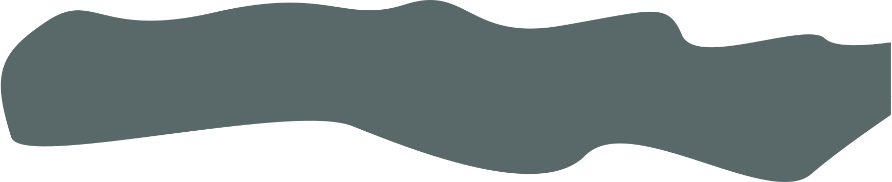
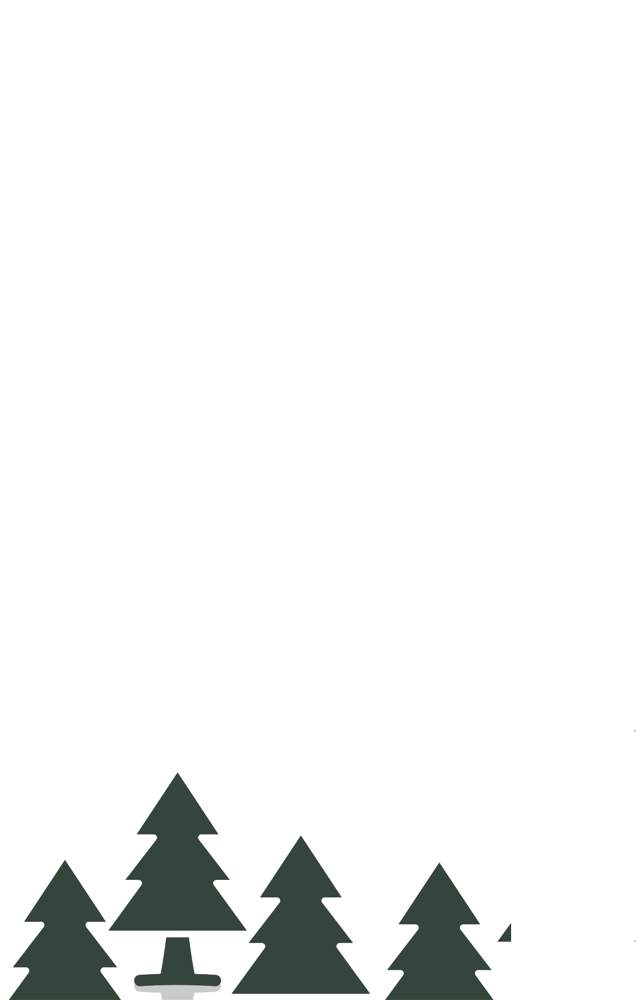
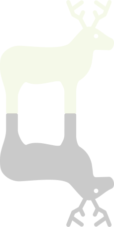
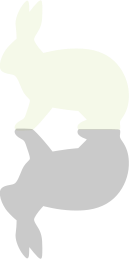
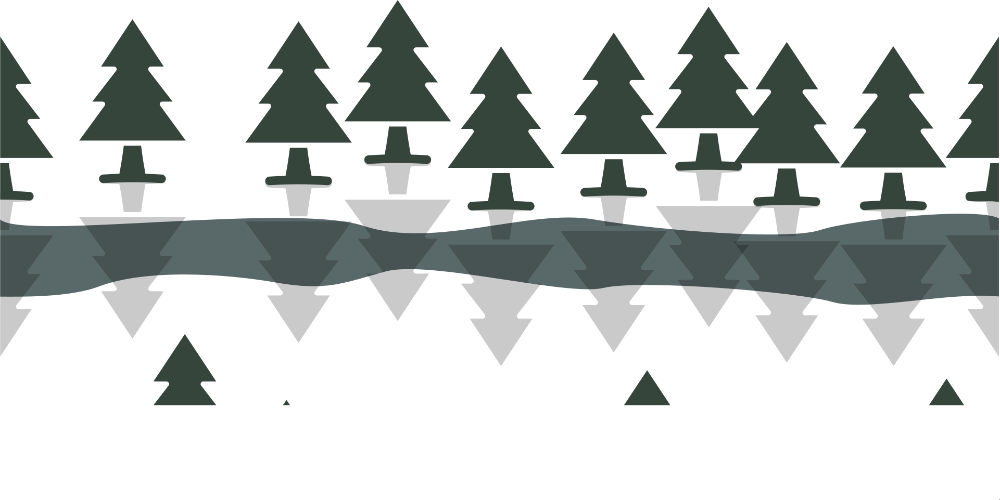

- déplacement de position x
- gsap.to(".nuage_1",{x:"50vw"});
- scrollTrigger
- scrollTrigger: { pin: true, scrub: true, start: 'top', end: 'bottom', trigger: '.debutchap1', }
Tout est paisible dans la forêt
  - déplacement de position x
- gsap.to(".oiseau_2",{x:"-60vw"});
- scrollTrigger
- scrollTrigger: { pin: true, scrub: true, start: 'top', end: 'bottom', trigger: '.debutchap2', }
Les oiseau volent
- rotation et paralax
- gsap.to(".oiseau_3",{rotate:"1000",y: 10 * speed});
- gsap.to(".nuage_3",{y: 7 * speed});
- gsap.to(".debutchap3",{y: -10 * speed});
- scrollTrigger
- scrollTrigger: { pin: true, scrub: true, start: 'top', end: 'bottom', trigger: '.debutchap3', }
Le plus jeune tombe
 
- animation de texte
- .to(".txt4",{duration: 2, text: "Le loup vient aider l'oiseau", ease: "none"});
- scrollTrigger
- scrollTrigger: { pin: true, scrub: true, start: 'top', end: 'bottom -200%', trigger: '.debutchap4', }
- timeline (déplacement de position x)
- ami.to(".cerf_5", { x: "35vw", y: "5vw", });
- ami.to(".lapin_5", { x: "-40vw", y: "-5vw", });
- scrollTrigger
- scrollTrigger: { pin: true, scrub: true, start: 'top', end: 'bottom', trigger: '.debutchap5', }
Il appelle ses amis
 - déplacement de position x
- gsap.to(".arbre_lac_6",{x:"-50%"});
- scrollTrigger
- scrollTrigger: { pin: true, scrub: true, start: 'top', end: 'bottom', trigger: '.debutchap6', }
Les amis marchent dans la forêt
 